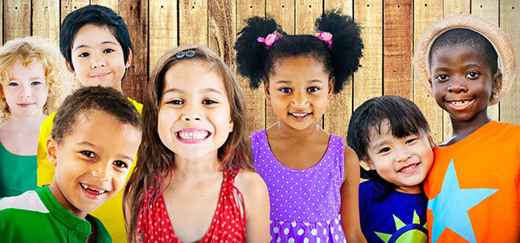

HISTÓRIA

No ano de 2018 um grupo de amigos com objetivos em comum se reuniu para plantar a semente de uma ideia que impactaria a vida não só deles, mas de muitas outras pessoas. Desse encontro surgiu o ORFANATO ESPERANÇA DE ESCOLHA. Fundado em 06 de janeiro de 2018, a Esperança de Escolha surgiu da ideia inicial de ajudar ao próximo. Decidiu-se, então, que este próximo a ser amparado seriam as crianças que se encontravam em situação de vulnerabilidade. A ideia era criar um abrigo que fosse para elas um pouso, uma passagem, e que durante o tempo que ali permanecesse seriam acolhidas com corações que as embalassem.
MISSÃO
Garantir um lar acolhedor e familiar às crianças que nos são encaminhas, onde recebam amor, atendimento individualizado e tratamento médico adequado até que sejam reintegradas a suas famílias ou adotadas.
VISÃO
Acreditamos que todas as crianças têm direito a um lar onde possam receber carinho, atenção, tratamentos e cuidados necessários para seu desenvolvimento e fortalecimento, dando perspectiva de uma vida mais saudável no futuro junto a seus familiares ou famílias adotivas, garantindo assim sua inclusão social e o exercício da cidadania.
VALORES
Respeito a vida, educação, amor, carinho e cuidado com o próximo.